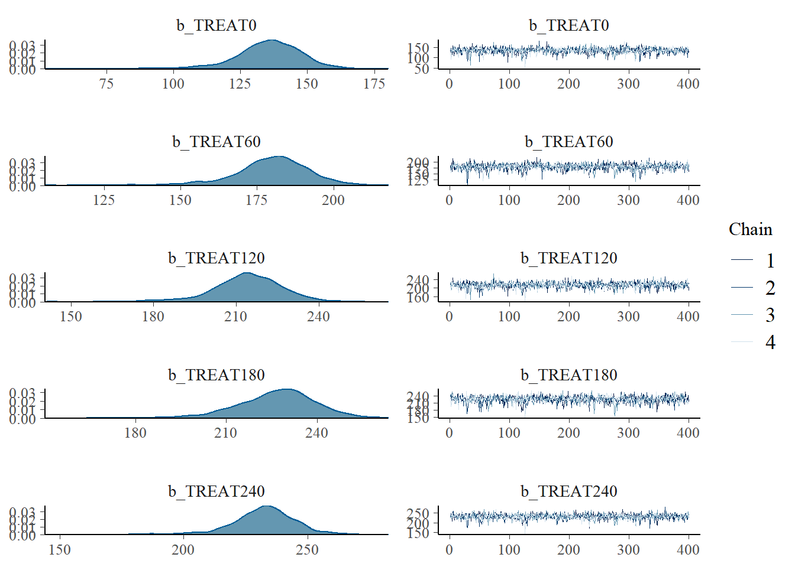
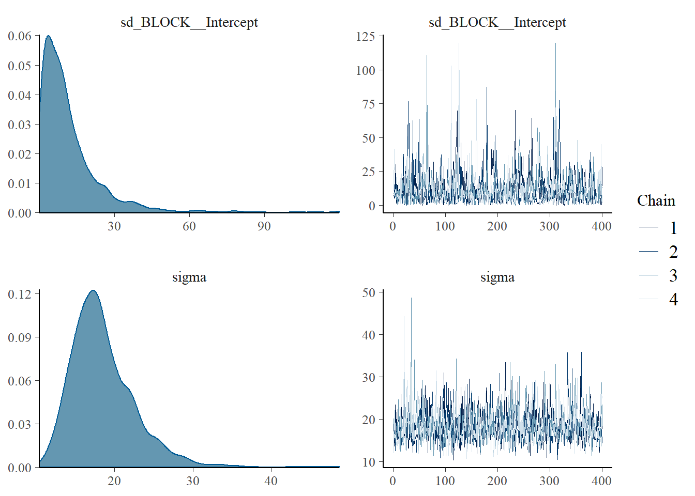
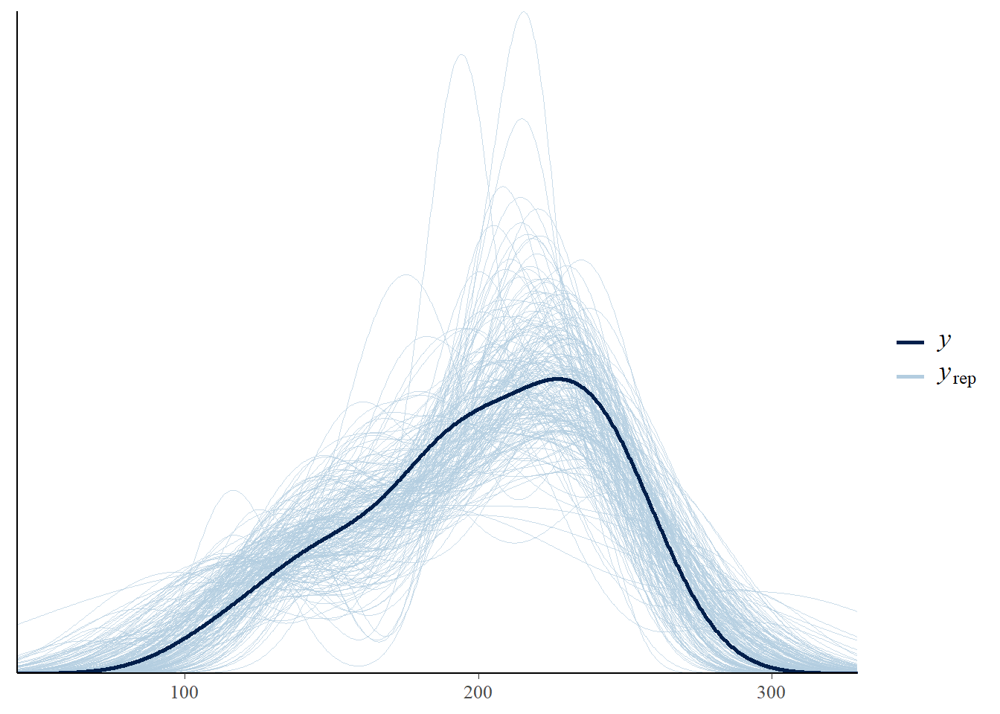
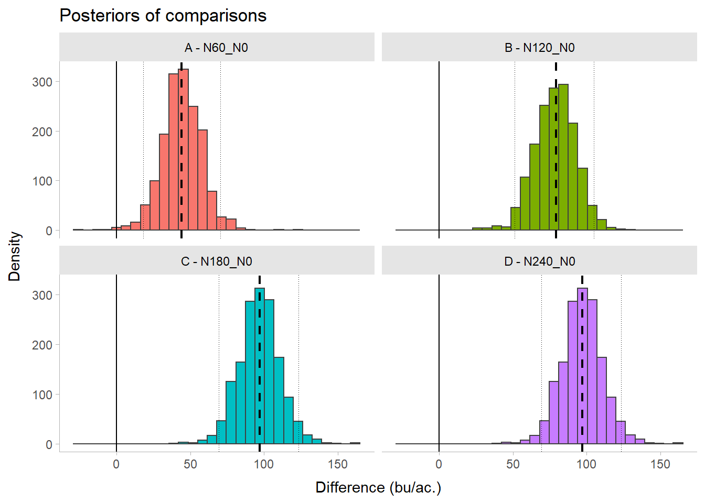

library(easypackages)
packages("dplyr", "tidyr", "purrr", "tibble")
packages("readxl", "stringr")
packages("ggplot2")
packages("nlme", "car", "emmeans", "multcomp", "multcompView")
packages("brms", "tidybayes", "performance")
# Data
# Corn yield response to N rates somewhere in KS
data <- read_excel("data/cropyield.xlsx") %>%
mutate(BLOCK = rep(c(1,2,3,4), nrow(.)/4))Week #4
Introduction to Bayesian Stats #3
This article is a review and final example to wrap up our brief introduction to Bayesian data analysis.
01. CONCEPTS REVIEW
Important
Under the Bayesian approach we consider probability as an expression of the degree of certainty (or uncertainty) about a process or parameter.
Note
REMEMBER!
The structure of the Bayesian theory is similar to the Human Logic process. It is all about updating knowledge:
(i) we have some data,
(ii) we have beliefs about the underlying process,
(iii) combining both, we can update our beliefs.
i. The Bayes Theorem
\[ P(\theta | x) = P(\theta) * \frac{P(x|\theta)}{P(x)}\] where \(\theta\) is the parameter of interest, \(x\) is the data, and “|” means “conditional”.
\[ Knowledge~after = Knowledge~before * updating~factor\] \[ Posterior~distribution = Prior~distribution * \frac{Likelihood} {Marginal Likelihood} \]
ii. Hierarchical structure
You may have heard multiple times about Bayesian Hierarchical Framework or Bayesian Hierarchical Modelling. This simply means that our model is compound by multiple nested levels (hierarchy) where we account for random effects. Actually, they are usually also referred as multi-level models (Hooten & Hefley, 2019). There are two relevant concepts here to derive the posterior distributions:
Hyper-parameters are the parameters of the prior distribution. For example, if we have \(Y|\mu \sim N(\mu, \sigma^2)\), with \(\mu = \beta_1 *X\) as the “top-level” parameter describing the process model, where \(\beta_1\) is the hyper-parameter.
Hyper-priors are the distributions of the hyper-parameters. For example, \(\beta_1 \sim N(\mu_{\beta_1}, \sigma^2_{\beta_1})\) is the hyper-prior of \(\beta_1\)
Basically, we have a set of layers (see Kwag & Hu, 2019):
Layer 1: the data layer \[ y_i|\mu_i, \beta_1 \sim P(y_i|\mu_i, \beta_1)\]
Layer 2: the process layer \[ \mu_i| \beta_1 \sim P(\mu_i|\beta_1)\]
Layer 3: the prior layer \[ \beta_1 \sim P(\beta_1) = \]
\[ \beta_1 \sim N(\mu_{\beta_1}, \sigma^2_{\beta_1})\]
Posterior distribution
Following the example above, the posterior \(P(\mu_i, \beta_1|y_i)\) is a probability density function that quantifies the “uncertainty” about \(y_i\) within a specific model after the data collection as follows:
\[ P(\mu_i, \beta_1|y_i) \propto P(y_i|\mu_i, \beta_1)*P(\mu_i|\beta_1) * P(\beta_1) \] where \(y_i\) represents the data, and \(\mu_i\) is the process model dependent on the random variable \(\beta_1\).
In practice, however, we never know this specific function. So what we do is to create multiple simulations (the MCMC) given the prior/s and the data, and then summarizing those simulations (e.g. obtaining credible intervals at variable probability levels, for example, 95%).
References
Hooten, M.B., and Hefley, T.J., 2019. Chaper 19: Hierarchical Models. Bringing Bayesian Models to Life. https://doi.org/10.1201/9780429243653
Kwag, S., Ju, B.S. Application of a Bayesian hierarchical model to system identification of structural parameters. Engineering with Computers 36, 455–474 (2020). https://doi.org/10.1007/s00366-019-00708-1
02. EXAMPLE CODE
Libraries
a. Frequentist with lme
# Analisis, no intercept (0 + ...)
yield_lme <- data %>%
group_by(PHASE) %>% nest() %>%
mutate(model = map(data,
~lme(GY_bu ~ 0 + as.factor(TREAT),
random = ~1|BLOCK, data=.)))
# Extract the model
corn_lme <- yield_lme[["model"]][[1]]
corn_lmeLinear mixed-effects model fit by REML
Data: .
Log-restricted-likelihood: -67.70787
Fixed: GY_bu ~ 0 + as.factor(TREAT)
as.factor(TREAT)0 as.factor(TREAT)60 as.factor(TREAT)120 as.factor(TREAT)180
137.7226 183.1838 215.1319 233.2673
as.factor(TREAT)240
236.2163
Random effects:
Formula: ~1 | BLOCK
(Intercept) Residual
StdDev: 1.65409 17.46253
Number of Observations: 20
Number of Groups: 4 # ANOVA
Anova(corn_lme, type = 3)Analysis of Deviance Table (Type III tests)
Response: GY_bu
Chisq Df Pr(>Chisq)
as.factor(TREAT) 2627.3 5 < 2.2e-16 ***
---
Signif. codes: 0 '***' 0.001 '**' 0.01 '*' 0.05 '.' 0.1 ' ' 1Multiple comparison
# Multiple comparison
corn_lme_mc<-emmeans(corn_lme, ~ TREAT)
corn_lme_means <- as.data.frame(
cld(corn_lme_mc, decreasing = TRUE, details=FALSE, reversed=TRUE, alpha=0.05,
adjust = "tukey", Letters=LETTERS))
corn_lme_means TREAT emmean SE df lower.CL upper.CL .group
1 240 236.2163 8.770349 12 209.5232 262.9093 A
2 180 233.2673 8.808076 12 206.4594 260.0751 A
3 120 215.1319 8.789152 12 188.3816 241.8822 AB
4 60 183.1838 8.770349 12 156.4907 209.8768 B
5 0 137.7226 8.789152 12 110.9724 164.4729 Cb. Bayesian with brms
i. MCMC pars
# Set up pars
WU = 1000
IT = 3000
TH = 5
CH = 4
AD = 0.99ii. Fit
# Analysis
corn_brms <- data %>%
mutate(TREAT = as.factor(TREAT)) %>%
dplyr::group_by(PHASE) %>% tidyr::nest() %>%
mutate(model = map(data,
~brms::brm(
#Priors
# Priors
prior = c(
# Prior of the Yield (effect from 0) notice there is no intercept
prior(prior = 'normal(100,100)', class = "b") ),
# If using the intercept
# prior(prior = 'normal(80,80)', class = "Intercept") ),
# Careful with "treatment" prior, cause it's not yield now (it's response)
# prior(prior = 'normal(100,100)', class = "Intercept") ),
# Formula
# With 0 as the intercept.
formula = bf(GY_bu ~ 0 + TREAT + (1|BLOCK)),
data = ., sample_prior = "yes",
family = gaussian(link = 'identity'),
control = list(adapt_delta = AD),
warmup = WU, iter = IT, thin = TH,
chains = CH, cores = CH,
init_r = 0.1, seed = 1) ) )iii. Check the model
# Plot
plot(corn_brms$model[[1]]) 

# Check the posteriors
# (yrep, blue lines) to see how the model simulates your data (y, black line)
pp_check(corn_brms$model[[1]], nsamples = 200)
iv. Model summary
# Summary
summary(corn_brms$model[[1]]) Family: gaussian
Links: mu = identity; sigma = identity
Formula: GY_bu ~ 0 + TREAT + (1 | BLOCK)
Data: . (Number of observations: 20)
Draws: 4 chains, each with iter = 3000; warmup = 1000; thin = 5;
total post-warmup draws = 1600
Group-Level Effects:
~BLOCK (Number of levels: 4)
Estimate Est.Error l-95% CI u-95% CI Rhat Bulk_ESS Tail_ESS
sd(Intercept) 11.68 12.34 0.36 41.57 1.00 1037 948
Population-Level Effects:
Estimate Est.Error l-95% CI u-95% CI Rhat Bulk_ESS Tail_ESS
TREAT0 135.24 13.16 104.55 157.89 1.00 1122 986
TREAT60 179.61 12.73 151.16 201.41 1.00 1269 963
TREAT120 213.87 13.17 182.48 237.34 1.00 1288 1080
TREAT180 226.12 14.07 194.25 250.38 1.00 1111 945
TREAT240 232.10 13.33 200.74 256.62 1.00 1264 1196
Family Specific Parameters:
Estimate Est.Error l-95% CI u-95% CI Rhat Bulk_ESS Tail_ESS
sigma 18.43 3.99 12.50 27.90 1.00 1495 1534
Draws were sampled using sampling(NUTS). For each parameter, Bulk_ESS
and Tail_ESS are effective sample size measures, and Rhat is the potential
scale reduction factor on split chains (at convergence, Rhat = 1).# Performance
performance::performance(corn_brms$model[[1]])# Indices of model performance
ELPD | ELPD_SE | LOOIC | LOOIC_SE | WAIC | R2 | R2 (marg.) | R2 (adj.) | R2_adjusted_marginal | RMSE
-----------------------------------------------------------------------------------------------------------------
-90.633 | 2.558 | 181.265 | 5.115 | 179.679 | 0.839 | 0.824 | 0.741 | -0.365 | 13.943v. Extract posteriors
# Pass model draws to a dataframe
corn_brms_draws <- as.data.frame(corn_brms$model[[1]]) %>%
# Rename for simplicity
rename_with( ~ str_replace(.x, "b_TREAT", "N"))
# Create a df with posterior of treatment differences
contrast_tibble <-
corn_brms_draws %>%
# FOr model with GY_bu ~ 0 + TREAT
mutate(# Rates vs. Check
`A - N60_N0` = N60 - N0,
`B - N120_N0` = N120 - N0,
`C - N180_N0` = N240 - N0,
`D - N240_N0` = N240 - N0,
.before = 1) %>%
dplyr::select(1:4) %>%
pivot_longer(cols = everything(),
values_to = "value", names_to = "contrast")
# Contrast summary
contrast_summary <-
contrast_tibble %>% group_by(contrast) %>%
summarise(median = median(value),
q025 = quantile(value, prob = 0.025),
q975 = quantile(value, prob = 0.975) )vi. Posteriors Summary
# Plot
contrast_plot <- contrast_tibble %>%
ggplot(aes(x = value, color = contrast))+
geom_histogram(aes(fill = contrast), color = "grey25")+
# Add median
geom_vline(data = contrast_summary, aes(xintercept = median),
linetype = 2, size = 0.75)+
# Add limits of credible intervals
geom_vline(data = contrast_summary, aes(xintercept = q025),
linetype = 3, size = 0.25)+
geom_vline(data = contrast_summary, aes(xintercept = q975),
linetype = 3, size = 0.25)+
# Add line at 0 bu/ac.
geom_vline(data = contrast_summary, aes(xintercept = 0),
linetype = 1, size = 0.5)+
facet_wrap(~contrast, nrow = 2)+
labs(title = "Posteriors of comparisons",
x = "Difference (bu/ac.)", y = "Density")+
theme_tidybayes()+
theme(legend.position = "none")
contrast_plot